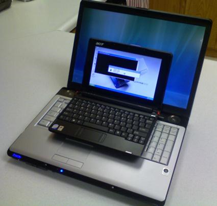

PCH17-Notebook Features and Components <<
Previous Next >> Expansion-
Laptops and Notebooks-
Laptops, netbooks, and notebooks are computers that are specifically designed for mobile use, unlike standard desktop workstations that remain stationary. The first laptops were created in the 1970s, but only for very specialized uses. Widespread adoption of laptop computers did not occur until the 1990s, but today they are in use everywhere. Originally, there were distinctions between laptops, notebooks, and netbooks, but in our discussions the terms will be used interchangeably. The distinctions between laptops, notebooks, and netbooks can most often be attributed to marketing, and many of those differences have morphed as the industry continues to evolve. Laptops and notebooks have essentially become a reference to fully equipped mobile computers with hardware and software availability similar to standard desktops using full-instruction set processors (x86 or x64). Most netbooks and tablets generally use embedded processors, such as arm-based RISC or similar. For example, an Alienware R-18 or an HP Elite series laptop runs a full operating system and can support any software designed for a desktop PC. Apple Macbook Pro and Air laptops also run desktop-equivalent, full operating systems. Classifications for a laptop might include desktop replacement, gaming rig, multimedia, or business class. Notebooks, as a subset of laptops, can be further classified as business class, ultrabook, or ultra-portable. Generally, the biggest differences between laptops and notebooks are the physical dimensions and weight.
While most laptops and notebooks may share similar processor design and software with their desktop counterparts, netbooks and tablets are quite different, because netbooks and tablets use ARM or MIPS RISC processors. In netbooks and tablets expandability is usually limited to an external USB port and micro-SD card reader. Netbook as a name is increasingly being replaced with "Chromebook", which is available from most major computer manufacturers. The OS and software available is limited and specialized for these processors. Current models include the Android and Windows RT operating systems. With the power of cloud computing and software as a service (SaaS), netbooks and tablets are more enticing for users because of their lower cost, lightweight nature, and longer battery life. We will discuss tablets separately as a “mobile device” in another module.
Laptops are regular computers and are fully capable of completing all of the same functions as a desktop workstation. As stated above, the main difference is their portability and size. The main difference is their size: they are much smaller and more compact than a traditional workstation. For this reason, they are limited in their internal component replacement, upgrades, and expansion, and these upgrades are performed differently than in a traditional computer workstation. The main differences between laptops, notebooks, and netbooks are their size and the amount of processing power and capabilities they have. Laptops tend to have more internal storage, video capabilities, and processing power than the smaller netbooks. Because laptops and notebooks are smaller than their desktop counterparts, most laptops compromise on power to allow for mobility and smaller size. The compact size of these devices reduces their ability to provide cooling. Therefore, processing power is often sacrificed to minimize heat and maximize battery life.
In spite of these limitations for most laptops, most all manufacturers offer models with top of the line mobile processors, discrete graphics cards, improved cooling, and a comparable amount of RAM (currently up to 32 GB). With this kind of processing power and speed, laptops users may experience less than average battery life.
The most common type of memory used in laptop computers is the small outline dual in-line memory module (SODIMM). SODIMM is a good option for laptop computers, as it takes up a fraction of the space the dual in-line memory module (DIMM) of a typical desktop computer does.

Laptop and notebook. Photo used under CC-BY license from Ryan McFarland.
Learn by doing-
True or False: Desktops use the same technology as notebooks except they use less power and take up less space.
(T:Incorrect. Notebooks take up less space and use less power than desktops.
F:Correct. Notebooks take up less space and use less power than desktops.)
Hint:Notebooks, laptops, and netbooks all refer to portable computing devices.
The compact size of a notebook reduces the cooling ability of the device. Therefore, in a notebook, is reduced to minimize heat generation.
Hint:The compact size of these devices reduces their ability to provide cooling.
筆記本電腦-
筆記本電腦，上網本和筆記本電腦是專門為移動使用而設計的計算機，與保持靜止的標準台式機工作站不同。
第一台筆記本電腦創建於1970年代，但僅用於非常專業的用途。直到1990年代，筆記本電腦才被廣泛採用，
但是今天它們在世界各地都得到了使用。最初，筆記本電腦，筆記本電腦和上網本之間存在區別，但是在我
們的討論中，這些術語可以互換使用。筆記本電腦，筆記本電腦和上網本之間的區別通常可以歸因於市場營
銷，並且隨著行業的不斷發展，這些差異中的許多差異都在變化。筆記本電腦和筆記本電腦實質上已成為具
有硬件和軟件可用性的功能齊全的移動計算機的參考，類似於使用全指令集處理器（x86或x64）的標準台式
機。大多數上網本和平板電腦通常使用嵌入式處理器，例如基於Arm的RISC或類似處理器。
例如，Alienware R-18或HP Elite系列筆記本電腦運行完整的操作系統，並且可以支持為台式PC設計的任
何軟件。 Apple Macbook Pro和Air筆記本電腦還運行與台式機等效的完整操作系統。筆記本電腦的分類可
能包括台式機更換，遊戲機，多媒體或商務艙。作為筆記本電腦的子集，筆記本電腦可以進一步分為商務類，
超極本或超便攜式。通常，筆記本電腦和筆記本電腦之間的最大區別是物理尺寸和重量。
雖然大多數筆記本電腦和筆記本電腦可能與台式機共享相似的處理器設計和軟件，但上網本和平板電腦卻大不
相同，因為上網本和平板電腦使用ARM或MIPS RISC處理器。在上網本和平板電腦中，可擴展性通常僅限於外
部USB端口和micro-SD讀卡器。上網本的名稱正越來越多地由大多數主要計算機製造商提供的“ Chromebook”
代替。可用的OS和軟件受限制並且專門針對這些處理器。當前的模型包括Android和Windows RT操作系統。
憑藉雲計算和軟件即服務（SaaS）的功能，上網本和平板電腦具有較低的成本，輕巧的特性和更長的電池壽
命，因此對用戶更具吸引力。我們將在另一個模塊中將平板電腦作為“移動設備”進行單獨討論。
筆記本電腦是普通計算機，完全能夠完成與台式機工作站相同的所有功能。如上所述，主要區別在於它們的
可移植性和大小。它們的主要區別在於它們的大小：它們比傳統的工作站小得多，而且更緊湊。因此，它們
在內部組件更換，升級和擴展方面受到限制，並且這些升級的執行方式與傳統計算機工作站不同。筆記本電
腦，筆記本電腦和上網本之間的主要區別在於它們的大小以及它們具有的處理能力和功能。筆記本電腦往往
比較小的上網本具有更多的內部存儲，視頻功能和處理能力。由於筆記本電腦和筆記本電腦的體積要小於台
式機筆記本電腦，因此大多數筆記本電腦會在功耗上有所妥協，以實現移動性和更小的尺寸。這些設備的緊
湊尺寸降低了它們提供冷卻的能力。因此，通常犧牲處理能力以最小化熱量並最大化電池壽命。
儘管大多數筆記本電腦都有這些限制，但大多數所有製造商都提供配備頂級移動處理器，獨立顯卡，改進的
散熱和相當數量的RAM（當前最高32 GB）的型號。通過這種處理能力和速度，筆記本電腦用戶可能會遇到比
平均電池壽命短的情況。
便攜式計算機中最常用的內存類型是小型雙列直插式內存模塊（SODIMM）。 SODIMM對於便攜式計算機來說
是一個不錯的選擇，因為它僅佔台式計算機雙列直插式內存模塊（DIMM）的一小部分。

筆記本電腦和筆記本。照片由Ryan McFarland根據CC-BY許可使用。
通過實踐學習-
是非題：台式機使用與筆記本計算機相同的技術，不同之處在於它們消耗的功率更少，佔用的空間更少。
正確
錯誤
(正確:不正確。與台式機相比，筆記本電腦佔用的空間更少，功耗也更低。
錯誤:正確。與台式機相比，筆記本電腦佔用的空間更少，功耗也更低。)
暗示:筆記本電腦，筆記本電腦和上網本均指便攜式計算設備。
筆記本電腦的緊湊尺寸降低了設備的散熱能力。因此，在筆記本中 減少以最小化熱量的產生。
暗示:這些設備的緊湊尺寸降低了它們提供冷卻的能力。
As a technician, you will be required to install and configure laptop hardware. PC laptop manufacturers publish specification manuals as well as a variety of service manuals online that can help you install and configure laptop hardware. Most include information from a complete system teardown to replacing a motherboard or CPU.
Whenever you are working with laptop hardware, always check for the most complete up-to-date manual for anything more complicated than RAM, hard drives, or most wireless NIC cards. Also, always use safe handling and anti-static procedures when working on a computer.
作為技術人員，您將需要安裝和配置筆記本電腦硬件。 PC筆記本電腦製造商會在線發布規格手冊以及各種服務手冊，以幫助您安裝和配置筆記本電腦硬件。其中大多數信息包括從完整的系統拆卸到更換主板或CPU的信息。 每當使用筆記本電腦硬件時，請始終檢查最完整的最新手冊，以查找除RAM，硬盤驅動器或大多數無線NIC卡之外的任何復雜信息。此外，在計算機上工作時，請始終使用安全的處理方法和防靜電程序。
PCH17-Notebook Features and Components <<
Previous Next >> Expansion-